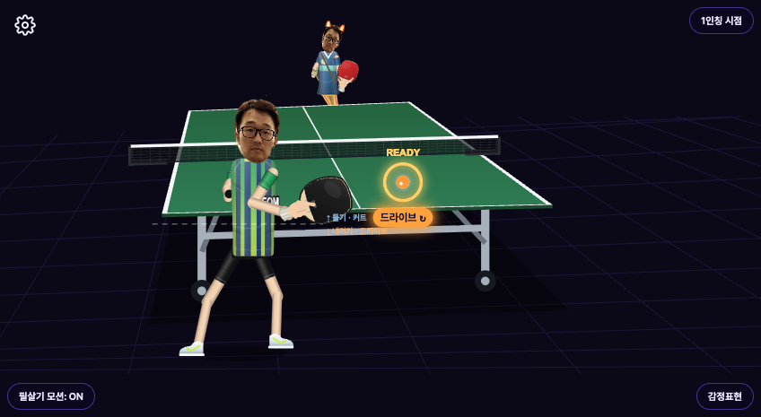

SPP 플레이북
타이밍과 스윙을 익힌 뒤, 막히는 공의 공략을 찾아보세요. 연습과 가이드는 로그인 없이 이용할 수 있습니다.

직접 해보는 연습
경기 기술과 판정
처음 30분의 연습 순서터치·드라이브·커트·투터치를 차례대로 익힙니다.
실제 화면으로 보는 타격타이밍 원·투터치·찬스볼의 위치를 게임 캡처와 시연 영상에서 확인합니다.
서브와 코스 선택서브부터 세 번째 타구까지, 공이 떨어지는 위치를 보고 다음 타구를 정합니다.
공을 읽는 리시브 공략빠른 공, 강회전, 짧은 커트에 대처하고 찬스볼을 공격하는 방법입니다.
속도·회전별 타이밍 비교같은 조건에서 계산한 PERFECT 구간과 캐릭터별 판정 수치를 비교합니다.
실제 탁구와 SPP의 규칙공식 탁구의 점수와 서브 교대부터 게임의 회전 판정과 투터치까지 살펴봅니다.